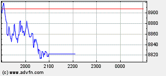
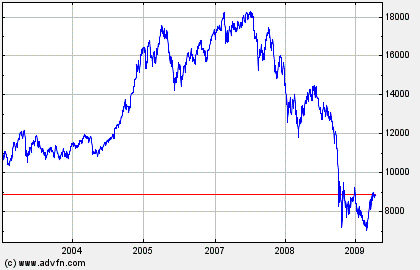
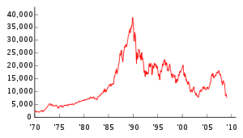

When somebody points at the moon,
only a fool looks at the moon,
reversers look at the pointing finger,
and sometimes bite it off.
(Ancient reversers' lore)
This small essay by hraefn (a new young reverser) seems quite an interesting "opening"
to me. "Fallite fallentes" (deceive the deceivers) should figure among
our seeker's mottos
and is anyway a real necessity in a society, like ours, whose aim is just
to have obedient consumer guinea pigs who...
- waste their lives (and destroy
the whole
planet)...
-
happily commit
genocides and aggressions without even discussing the real matter at hand...
-
spend most of their time interested in gossip and useless trivialities...
-
slurp cheap sarcastic euphemisms like "prolonging the active life" for
destroying their right to a pension and having them if possible dying
on their workplace, and "credit crunch" (which sounds like something
inevitable and not like the incredible pyramid scheme the economic
powers that be and their political lackeys pulled off)...
...just in order to enjoy the dubious benefit
to buy as soon as possible a new car with a slightly different color.
This same pervasive and deeply
antidemocratic society (where else, apart maybe in tribal
Uruanda Burundi, would people elect the richest men of
the land, assorted starlets and the owners of the very
media that fill them with propaganda?) has burnt during the last months
hundred of billions in one of the most amazing pyramid schemes in the
economic history, and after making sure that those that are going to pay
are the unwashed poors, the only thing our politician class can
propose is to start again with the same absurd consume/credit bazaar.
To question the development model seems to be beyond their
limited capabilities. Money and age aplenty, but
brains as shallow as a potato field, I tell you...
Yet, and despite the general decadence of such arts and sciences,
there are some possibilities to see some light through the heavy propaganda
fog. Rhetoric knowledge is for instance an incredibly powerful weapon to reverse
everything in sight. Knowing your own limits
and questioning your own
assumptions is equally important. Finally
exegesis
and evaluation techniques should be a cherished sine qua non in all our seeker' quivers,
together with our webbit-arrows :-)
Critical thinking (by hraefn, slightly edited by fravia+)
|
Introduction
hraefn April, 2009
I stumbled across this site filled with knowledge and thought free for the taking, at a time when I had begun to doubt that such a place still existed. I am beginning to learn to search, and one day perhaps I will write essays on that topic, for now however I can contribute some techniques, perhaps defining some simple things that every reality cracker ought to be aware of when they are starting out and should be brought again to the attention of those who are well versed with the subject to refresh their awareness again. Probably there will be more than one of these essays, and each shall deal with one or two important topics in the world of critical thought. I am certain only that these essays won't be comprehensive on this subject, but if they are useful in defining some of the techniques we can use them as a start.
Critical thinking is the ability to be aware of the fallacies in our own thinking, and root them out. The overconfidence that we are right, that we only exaggerate slightly, or value an ideology over truth. These are things we as reality crackers need to be aware of and counter both in ourselves and in the information we receive.
My own outlook is to find truth, rather than fantasies or delusions rooted in fear or the wish to believe them, that is what brought me to reality cracking and exegesis. I have always had the sort of mind where inconsistencies nag at me. I have no problem questioning things, in fact I encourage all of you to do that very thing, all the time. Question why it is you are tempted to buy the more expensive product in a supermarket, or why you are buying crap you do not need and did not have on your list (of course +Orc's "slaves" essay explains these things). Question the news and the politicians, question this essay. Question statistics, newspapers, advertisements and magazines, question the content. Question the context of quotes, find out how they were used the first time. The point is to question everything and you will begin to notice inconsistencies, begin to develop understanding of why it is that **that** view is being promoted.
Imperative to understanding actions and viewpoints of leaders and corporations is to ask a few simple questions.
Who benefits from this? Cui bono? Most probably not the people whom the statement intends to benefit. It may well be to increase the leader's standing among others, or to cover over something else, perhaps to improve public relations.
The next important step is to follow the money. For example a certain war in Iraq (an overused example now so it shall be the last time I make use of it), following money backwards we end up with a large chunk of it going back to the people who started the war in the form of construction contracts/weapons manufacturers. We see also the American oil. Of course this is common knowledge now, but it was evident as the war was starting as well, and anyone who thought to ask these questions then could see very quickly the conclusions that would have followed. How much do corporate donations save a company in taxes?
Another important question to ask is what is the information and what load of garbage is lumped in with it? When searching for something, the answers are often found among slight twists and small glitches, or sometimes buried deep. A good example of this is the article on the economic crisis outlined below.
Some simple examples: Have you ever wondered about paying a dollar to help a charity in the grocery store? And how comes that a private, commercial
and profit-oriented company decides to make a "donation" at all? For
profit reasons, of course. It doesn't affect their profits much, rather they donate the dollar that you and a million other people paid (and some of their profits as well, but not too much in the large scheme of things). Yes the company made the donation, but claimed it in taxes even though
it was your dollar that allowed them to claim the donation. This is not always the case, you can of course buy things and give them yourself to the food bank. And sometimes there are pre-packaged bags of food to donate for a cost (but can you walk out with that bag for yourself?) I have yet to track down the answer to this.
A quick list of some important things
- Question all the time
- Critical thought can only be an effective filter if it is universally applied to subjects, and used all the time
- A fact is only as good as the evidence it came from. Seekers can find the original source and are able to find good sources
rather than junk
- Don't hesitate to *work* to find the solution
- Fallacies are not always intentionally propagated
- Search to find good evidence, analyse the evidence, make a decision if enough evidence is present,
be open to change it if better evidence comes along
- Know your own biases, and be aware of them.
You cannot always trust yourself, many of our beliefs exist because we have never questioned them. Information that aligns with your bias is more likely accepted than information which opposes your position. Many of our biases come from how we were raised (religion belief is a good example), so we often don't even question why we believe something. Our questioning as children is easily dismissed so that by the time we are old enough to form our own opinions on topics like politics etc., the views we were raised with have been ingrained in us. An alternative to this is if you disagree with the view you were raised with, it often comes from thinking about the issue and reasoning it out before accepting the conclusion. In this regard the maxim of 'know thyself' should be applied.
Often times, work will be necessary to find the answer, or to dig up a piece of evidence. Sometimes only short term searching
will be required, other times a long term strategies must be employed. Other times, many pieces
must be put together, or a conclusion is not forth coming with the evidence at hand. Perhaps there has been a propaganda campaign
that has well buried the information you seek. Of course the resources to learn this are present on
here.
I myself when first presented with the Monty Hall problem, in the form outlined
here
came to the wrong conclusion with my initial reaction. Had I not take the time to think, walk through the problem by questioning how
the opening of a wrong door influences the problem, and the outcome probabilities I would have remained quite happy in my solution
ignoring the existence of the opened door. The problem, relates to a game show (I know only the problem not much of its origins), there are three doors, behind two of the doors we are given nothing (as I was taught rather than a goat which seems to be the common idea), behind the last door is something desirable, like a delicious meal, or perhaps a vacation to somewhere nice rather than a car (which I have no need of to use up my money) in the original. You are told to choose a door, which you do, the odds of it being the door you would like are 1/3, while the odds of getting a goat are 2/3. The host now picks a door behind which nothing is found. You have the option of staying with the door you picked originally or switching to the other door. I came to the conclusion that in fact the odds were the same for my for and the other door 1/2 since there are now only two doors left and it must be behind one of the remaining doors. However, when you picked your door its odds were 1/3, that has not changed. What has changed is that the other door now has a probability of being 2/3 the door you want. Which means your original door has worse odds than the door you should switch to. This may still confound some of you, but to illustrate the idea more effective, suppose there were a million doors rather than just three. You pick a door. The host then opens 999 998 doors each of which reveal no prize. He will never open a door with the prize. This leaves 2 doors your original door with one in a million odds and the other door which somehow did not get picked in the opening of the other doors. The probability for this door is 999999/1000000 vs your original choice of 1/1000000. Counter intuitive to almost everyone, but when examined we find that in fact it is better to switch doors every time. Generally people do not switch, because in such a situation they would rather walk away with nothing than switch and lose the prize which somehow against the odds they managed to obtain. This probably goes back to our hunter gatherer instincts where losing food we had was not worth the risk in order potentially to gain something, of course we see that this stops working in casinos quite quickly
where zombies will give up an amount of money
in order to gain a mathematical security (albeit with chances of winning) of
losing 1/37 (or 2/38 if the american two zeros are also present)
in a place *setup* to slightly profit the owner ay every throw. The fact that
you have the same mahematical chances (zero) to win a lottery if you
take part in it or if you do not never stopped millions of morons
wasting their
You can of course tilt the odds in your favour, for instance in blackjack by counting cards, but soon they will catch on and you will be banned for using your brain in a legal activity.
Fallacies are not always intentionally propagated. This is an important thing not to lose site of. If you travelled back in time to when humans believed in the geocentric model. And asked a peasant if in fact the earth travelled around the sun or not. The response would tell you that in fact the earth was the centre of the universe. The peasant not knowing any better would give you the response he'd been taught. What is awful on the is when evidence indicates a widely held belief is wrong but is dismissed because those in power refuse to see it (their personal bias gets in the way). Such was the case with Copernicus and later Kepler and finally Galileo who demonstrated the heliocentric view with elliptical orbits was more plausible. Yet Galileo was not pardoned by the church until quite recently. This holds true when someone tells you something with good intention and believing it to be true, when in fact it is fallacious. Our ability to think critically and check such statements before we accept them as fact makes critical thought a powerful tool in reality cracking.
Filtering information
Effective filtering constantly is important to apply universally. It may be the case that one is extremely skilled in the field of Literature, but uninterested in math or science. Such being the case a static that is off by a factor of 10 might slip by unnoticed, giving a clearly wrong percentage 37% rather than say 3.7%. Such mistakes are common in print, and often missed by editors and readers alike, unintentionally but they are still there and sometimes quoted. Be on the lookout for numbers that sound too high or too low based and be willing to check. A basic understanding of all subjects is useful have in order to catch obvious errors. If not applied consistently it is possible that a tidbit could slip by and bias your future opinions on a subject in a way that you might disagree with if you had otherwise known that tidbit as bad argument, or poor evidence.
To illustrate an example of understanding the fallacy of statistics as they are often given when relating to health, I shall refer to a story on BBC dealing with the subject that I read sometime in the recent past, yet long enough to forget all but that it mentions a study about bacon, and 12% increase being the equivalent of 5 people increasing to 6 people, which related to alcohol in some way or another. It is of course interesting what sticks in my mind and what does not. But were my memory better, nonetheless my target is defined enough, I know that it came from news.bbc.co.uk. And with what is listed should be more than enough to find it easily, as the target is quite well defined. My first search I used the terms statistics+bacon+"12% increase" site:bbc.co.uk One hit, on screening risk about breast cancer, checking if that article links to the one I want, I find nothing. Next step is making use of the insite search bar (as I probably should have done in the first place), using the search of 'statistics bacon alcohol' I arrive at a page which has as the top result the article I am looking for entitled How to understand risk in 13 clicks. As I recalled. it explains the interpretation of statistics fairly well, at least in so far as many health based studies that get released are concerned. It is simple to apply the same strategies to other studies. Mostly be aware of actual numbers, biases (for example a study on the health effects of eating fast food regularly performed by a company that has a stake in it will almost certainly be biased). Of course, a 12% increase is the difference between 5 people and 6, how large is the sample? 10 people? or 100? these samples are much too small to be conclusive, one would require a 12% increase in a sample size of 10000 to approach reliability within a population. Also notice which number is the increase, 5 to 6, it 12% in that manner, however in a sample of 100 people, it is only an increase of 1% in general terms a much difference number than the 12%. There are two more things of note there, the first is that I probably remembered that page because of the large red font in the pictures, we naturally are more inclined to recall bright colors which is why the advertising world is often filled with bright color. We can of course use this trait advantageously ourselves to remember useful things by imagining them written in bright colours, or forms of rhetoric as a conversation taking place over a delicious meal of fresh fruit. And secondly, if I had recalled more of the text, rather than just brightly coloured pictures it would have been even simpler to find. One should be able to find the source of a quote, or a statistic by hearing it, and deciding to track down the source. Of course here I had read something a month ago and remembered it, but suppose you want to find something you saw many years ago, or overheard on the subway train just recently. Being willing to investigate information and pick out useful pieces is an extremely powerful tools. Knowing how to look at data enables us to comprehend what is constantly being thrown at us, either to scare us or to produce confidence in a system which has failed.
Visiting the economist page for some stock graphs which make excellent examples of the point I to make. Graphs are good for understanding trends visually, much faster to understand than reading a table with the same information. A few graphs of the Nikkei 225 obtained from the economist site, and wikipedia, (which is an index for the Tokyo Stock exchange (a value of 50 yen is given to shares and industries aren't weighted it reflects the market as a whole)) will demonstrate how graphs can be completely accurate and yet still be misinterpreted.
This graph here is the graph of the stock the evening of the 19th of April.

You can see that it has fallen quite steeply, (it now being closed the flat line will continue until trading begins tomorrow).
Examining the next graph, which is the same stock on the scale of the last 5 years.

Looking to the far right, you can see the tiny dip that occured today. A tiny change in the relative scheme of things. But it gives perspective to the smaller graph (notice the scale on the y-axis, 7000-18000 rather than 8820-8940 in the first graph.
Using a graph with a much longer time scale from wikipedia:

Note that the scale on the y-axis begins at 0 and increases consistently, rather than starting at an arbitrary point to enlarge the trend. The graph begins at 1970, and continues through to the present. We notice that it was much higher, around 1990 than it is now. Further there are spikes and pits, if you examine closely the first graph todays, and this last graph between ~1990-~2003 they are quite similar with a similar look of peaks and a similar general trend, a property of chaotic systems is self-similarity. (Chaotic system does not mean chaotic in the way we typically think of chaos, merely that a tiny change in input will radically alter the output and hence they are effectively impossible to predict). Of course there are many papers which you can find if you look around which detail the relationship between stocks and non-linear/chaotic systems.
Looking at these graphs we see that what initially looked to be a significant decline, in proper perspective over a 5 year period (a tiny change in relative terms), and finally over an almost 40 year period much worse things have happened about 1993. Where it now appears the trend to be wavelike or slightly down following the peak of ~1990. Look at the scale, the units (hours vs years). You can of course investigate what has caused the various peaks and valleys by means of searching historical events around that time.
Looking at our current economic state, and knowing what happened when people over used credit in the 1920's, I ponder how it came to happen that again the market would crash. It was quite predictable that this crash would occur at some point in the near future based on the trends that have been occurring for several years now (things cannot grow forever in a system with limited resources such as earth, eventually a collapse has to occur). Based on the principle of self-similarity, we note similar trends occurring before both crashes in markets, people overspending, and using too much credit. The notable lack of laws governing the system to prevent this from occurring.
Arguments of a sort
I put some examples of arguments here only because it is important to understand arguments, explanations and insidious advertising. Insidious advertising doesn't even involve arguments or explanations that we can think critically about but rather seeks to associate products with desire, or a certain lifestyle. It seeks to bypass our ability to think critically about the advertisement at all. By being aware of their techniques, many of which are outlined in the reality cracking essays, it is possible to bring them to a conscious level where we can think about them, and begin to filter them out rationally. Of course other advertisements appeal to the testimonies of other people (which can't be trusted to be neutral in an ads), or in other ways dealt with far better elsewhere than I could do here.
A quick note on the definition of arguments and explanation as used throughout these essays. We all accept that there is some force (which we call gravity) that pulls objects together. In this case of us on earth, this entails staying on the ground how come people don't fall off the bottom. An explanation helps us to understand how it is that gravity works. Objects with mass attract each other thus we and pulled toward the centre of the earth until we are stopped by the matter between use and where we are being pulled to thus anyone on the earth gets pulled towards its centre and no one could fall off. An argument on the other hand, entails trying to convince someone that a statement is true using premises (possibly explanations) and deductive reasoning.
Valid arguments, or arguments that if all the premises are true, the conclusion is also true. They are airtight irrefutable arguments (of course rarely are such arguments found in the wild because they are often self-evident). An example of such an argument in simple terms is If A then B. If I have just eaten lunch, then I am not hungry. I have just eaten lunch, therefore I must not be hungry. To disprove an argument only a single counter example is needed to show the premise is wrong. If birds have wings, they can fly. It is a valid argument, but unsound because the premise is false. One can then point out one of the birds with wings that can't fly and the argument is false, ostriches or emus work here. A valid argument will always be true, if its premises are correct, if the premise is wrong it is an unsound argument.
If a then b, if b then c. A simple statement, it follows that if a then c, which is correct. However if c then a, or if b then a may not be true. To illustrate this practically, if Frank is cranky, Frank is annoying. If Frank is annoying Frank gets what he wants (sadly this is all too often the case). Now Frank is cranky, so he gets what he wants. On the other hand if Frank gets what he wants, it doesn't necessarily entail that he was cranky or that he was annoying, perhaps he wanted wanted to stop watching television and read a book. He did that and got what he wanted without being cranky or annoying. This is important to watch out for because it is a common mistake that is often made through poor reasoning.
There are too many sorts of fallacious arguments to go over here, so I suggest trying searching for fallacious arguments for a more complete reference.
Deductive arguments, if sound will forever be sound regardless of premises that get added. Inductive arguments on the other hand: Chair one is made of wood, chair two is made of wood...chair 981234684 is made of wood (and all those in between), therefore all chairs are made of wood. We are making an inductive argument based on observed evidence, but not all cases, the 981234685th chair might be plastic. It lends some degree of support, but is may become wrong when another premise is added or a counter example is found.
A few closing thoughts before I move into critical reasoning about probability, statistics and numbers and after that who knows. Why do most people drive 15 minutes further to save $7 on a $25 pen (although why anyone would pay $25 for a pen is beyond me). And yet they wouldn't bother to drive 15 minutes further to save $7 on a computer for $500. These numbers are of course arbitrary, you can find quite easily where I obtained them from. See also the famous monty hall problem concerning probability, which is often counter intuitive to most people.
© hraefn 2009
You are deep inside fravia's www.searchlores.org
© III Millennium: [
fravia+
], all rights
reserved, coupla wrongs reversed